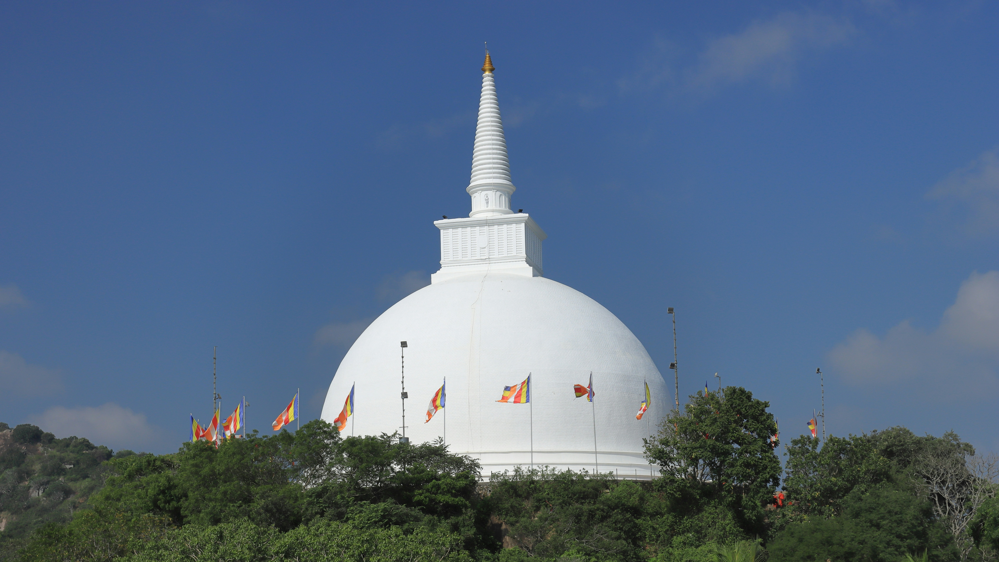

🏛 AR Heritage Explorer
Select a monument and place it on a flat surface
Gateway of India
Select
Charminar
Select
India Gate
Select

Vishwa Shanti Stupa
Select
Taj Mahal
Select
➕ Zoom In
➖ Zoom Out
🔄 Rotate
↩ Reset
English
Hindi
Telugu
🔊 Listen